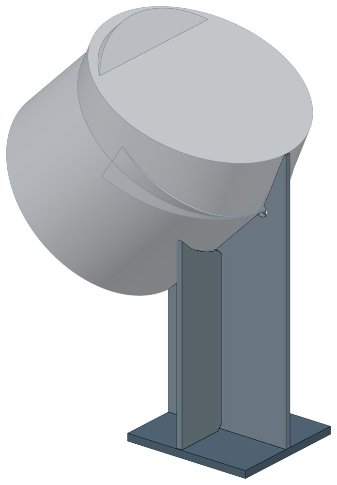
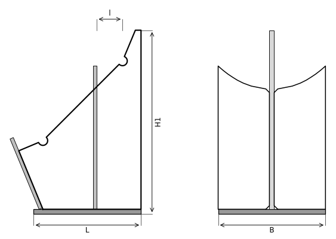

Опоры сварных отводов ТС-631
Опора под сварной секторный отвод 90° — там, где трубопровод поворачивает из вертикали в горизонталь. Косынка вырезана по сегментам отвода и стоит в его плоскости, два ребра — поперёк, снизу основание; на больших диаметрах добавлено наклонное седло.

- Диаметр трубы Dн
- 108–1420 мм
- Документ
- Серия 5.903-13 вып. 8-95
- Исполнений
- 22
- Допустимая вертикальная нагрузка
- до 210 кН
- Масса
- 3,2–566 кг
- 3D-модели
- у всех исполнений
Применение и монтаж
Назначение: где применяется
Сварные отводы Dн 108–1420 мм на трубопроводах со средой температурой до 115 °C. Допустимая вертикальная нагрузка от 3 до 210 кН — по диаметру. Низ горизонтального участка трубы — в 100 мм над основанием опоры.
Монтаж: как устанавливается
Косынку, рёбра и седло приваривают к отводу. Основание опирается на опорную конструкцию.
Отличия от соседних типов
Это опора под поворот, а не под прямой участок. Прямые участки несут скользящие опоры: ТС-623 до Dн 159 мм, ТС-624 от Dн 194 мм.
Габаритная схема ТС-631

Состав комплекта на одну опору
| Косынка | 1 шт. |
| Ребро | 2 шт. |
| Основание | 1 шт. |
Таблица исполнений ТС-631
| Обозначение | Код ПРОМБУРГ | Dнмм | Допустимая вертикальная нагрузкакН | Ширина Вмм | Радиус Rмм | Высота Н1мм | Длина Lмм | Массакг | 3D |
|---|---|---|---|---|---|---|---|---|---|
| ТС-631.000 | ПБ-631-0108-1 | 108 | 3 | 80 | 305 | 311 | 120 | 3,2 | 3D |
| ТС-631.000-01 | ПБ-631-0133-1 | 133 | 4 | 100 | 320 | 321 | 130 | 3,6 | 3D |
| ТС-631.000-02 | ПБ-631-0159-1 | 159 | 5 | 110 | 330 | 336 | 140 | 3,9 | 3D |
| ТС-631.000-03 | ПБ-631-0219-1 | 219 | 10 | 140 | 360 | 373 | 160 | 6,4 | 3D |
| ТС-631.000-04 | ПБ-631-0273-1 | 273 | 15 | 170 | 410 | 413 | 180 | 8,7 | 3D |
| ТС-631.000-05 | ПБ-631-0325-1 | 325 | 20 | 210 | 490 | 477 | 210 | 16 | 3D |
| ТС-631.000-06 | ПБ-631-0377-1 | 377 | 25 | 210 | 570 | 532 | 230 | 19 | 3D |
| ТС-631.000-07 | ПБ-631-0426-1 | 426 | 30 | 250 | 640 | 596 | 270 | 27 | 3D |
| ТС-631.000-08 | ПБ-631-0530-1 | 530 | 40 | 310 | 800 | 711 | 330 | 39 | 3D |
| ТС-631.000-09 | ПБ-631-0530-2 | 530 | 40 | 300 | 530 | 516 | 300 | 36 | 3D |
| ТС-631.000-10 | ПБ-631-0630-1 | 630 | 50 | 360 | 950 | 1016 | 550 | 112 | 3D |
| ТС-631.000-11 | ПБ-631-0630-2 | 630 | 50 | 360 | 630 | 616 | 360 | 56 | 3D |
| ТС-631.000-12 | ПБ-631-0720-1 | 720 | 62 | 400 | 1080 | 1116 | 620 | 146 | 3D |
| ТС-631.000-13 | ПБ-631-0720-2 | 720 | 62 | 400 | 720 | 666 | 400 | 77 | 3D |
| ТС-631.000-14 | ПБ-631-0820-1 | 820 | 80 | 450 | 1230 | 1266 | 700 | 187 | 3D |
| ТС-631.000-15 | ПБ-631-0820-2 | 820 | 80 | 450 | 820 | 766 | 460 | 99 | 3D |
| ТС-631.000-16 | ПБ-631-1020-1 | 1020 | 124 | 550 | 1530 | 1516 | 850 | 268 | 3D |
| ТС-631.000-17 | ПБ-631-1020-2 | 1020 | 124 | 550 | 1020 | 916 | 550 | 146 | 3D |
| ТС-631.000-18 | ПБ-631-1220-1 | 1220 | 167 | 650 | 1830 | 1766 | 1000 | 381 | 3D |
| ТС-631.000-19 | ПБ-631-1220-2 | 1220 | 167 | 650 | 1220 | 1116 | 670 | 216 | 3D |
| ТС-631.000-20 | ПБ-631-1420-1 | 1420 | 210 | 760 | 2130 | 2016 | 1150 | 566 | 3D |
| ТС-631.000-21 | ПБ-631-1420-2 | 1420 | 210 | 760 | 1420 | 1266 | 760 | 273 | 3D |
Чтобы заказать, сообщите обозначение и код ПРОМБУРГ: +7 (499) 325-51-35, promburg@yandex.ru.
Нормативные документы
- Серия 5.903-13 вып. 8-95 Опоры трубопроводов подвижные. Рабочие чертежи (PDF, 199 с.) — документ, по которому изготавливается изделие
На трубу Dн 108–1420 мм в каталоге
Позиции каталога с исполнениями на те же наружные диаметры трубы.
Детали трубопровода
- Фланец стальной плоский приварной общих Dн: 15
- Отвод стальной крутоизогнутый 90° общих Dн: 14
- Фланец стальной воротниковый общих Dн: 14
- Отвод стальной крутоизогнутый 90°, 09Г2С общих Dн: 12
- Заглушка стальная эллиптическая общих Dн: 10
- Переход стальной концентрический общих Dн: 9
- Днище стальное эллиптическое общих Dн: 8
- Отвод нержавеющий 90° общих Dн: 1
Компенсаторы
- Компенсатор сильфонный 2ОПКР общих Dн: 15
- Компенсатор сильфонный 2ОПКР (ИЯНШ) 2ОПКРИ общих Dн: 15
- Компенсатор сильфонный 2СКУ.М 2СКУМ общих Dн: 15
- Компенсатор сильфонный 2СКУ.М (ИЯНШ) 2СКУМИ общих Dн: 15
- Компенсатор сильфонный КС общих Dн: 15
- Компенсатор сильфонный КСО (ИЯНШ) КСОИ общих Dн: 15
- Компенсатор сильфонный ОПКР общих Dн: 15
- Компенсатор сильфонный ОПКР (ИЯНШ) ОПКРИ общих Dн: 15
- Компенсатор сильфонный сейсмический общих Dн: 15
- Компенсатор сильфонный стартовый СК общих Dн: 15
- Компенсатор сильфонный СКУ.М СКУМ общих Dн: 15
- Компенсатор сильфонный СКУ.М (ИЯНШ) СКУМИ общих Dн: 15
- Компенсатор сильфонный 2СКУ.ППМ (ИЯНШ) 2СКУППМИ общих Dн: 14
- Компенсатор сильфонный 2СКУ.ППУ (ИЯНШ) 2СКУППУИ общих Dн: 14
И ещё 20 типов — в оглавлении каталога.
Другие опоры и подвески
- Опора неподвижная двухупорная ТС-660 общих Dн: 15
- Опора неподвижная щитовая ТС-666 общих Dн: 15
- Опора скользящая хомутовая ТС-626 общих Dн: 15
- Опорные плиты диэлектрические ТС-632 общих Dн: 15
- Опоры приварные неподвижные скользящие ОПН общих Dн: 15
- Опоры сварные скользящие неподвижные и направляющие СТО 79814898-130 общих Dн: 15
- Опора приварная скользящая и неподвижная ОСТ 34-10-616-93 общих Dн: 15
- Опоры хомутовые скользящие ОСТ 34-10-617-93 общих Dн: 15
- Опоры хомутовые неподвижные ОСТ 34-10-618-93 общих Dн: 15
- Опоры сварных отводов ОСТ 34-10-621-93 общих Dн: 15
И ещё 96 типов — в оглавлении каталога.
Другие типы раздела
Скользящие и катковые опоры тепловых сетей (ТС-623…ТС-632)
- Опора скользящая приварная ТС-623
- Опора скользящая приварная ТС-624
- Опора скользящая с плоским хомутом ТС-625
- Опора скользящая хомутовая ТС-626
- Опора скользящая бугельная ТС-627
- Опора катковая двухъярусная ТС-628
- Катковые опоры ТС-630
- Опорные плиты диэлектрические ТС-632
Частые вопросы
По какому диаметру подбирать — Dн или Ду?
По наружному диаметру трубы Dн: именно он стоит в таблицах серии. Ду — условный проход, округлённая величина: Ду 100 соответствует Dн 108. В заявке указывайте Dн и толщину стенки трубы.
Какую нагрузку выдерживает опора?
Допускаемая нагрузка задана в таблице для каждого исполнения — она в первой группе колонок каждой карточки. Хомутовая ТС-659 — осевая Q от 5 до 25 кН, щитовая ТС-666 — от 50 до 3300 кН, хомутовая с корпусом ТС-670 — Q до 380 кН и боковая T до 200 кН.
В старом проекте нагрузка в тс, а здесь в кН. Как сравнить?
Серия 4.903-10 даёт нагрузки в тонна-силах, серия 5.903-13 — в килоньютонах. 1 тс = 9,81 кН, то есть 10 тс — это около 98 кН. В таблицах каталога переключатель единиц пересчитывает значения.
Из какой стали изготавливаются опоры?
По рабочим чертежам серии листовые детали — Ст3сп5 ГОСТ 14637-89, хомуты из круга — сталь 20 ГОСТ 1050-88. Для районов с низкой расчётной температурой воздуха применяется низколегированная сталь, в том числе 09Г2С; размеры опор при этом не меняются. В заявке укажите расчётную температуру наружного воздуха.
Почему часть поверхностей опоры не окрашена?
Поверхности под приварку к трубе и к несущей конструкции оставляют без краски, иначе шов получится некачественным. Их консервируют смазкой, которую снимают перед сваркой.
Что указать в заявке, чтобы получить цену без уточнений?
Обозначение с номером исполнения или код ПБ, количество, Dн и стенку трубы, расчётную температуру наружного воздуха, покрытие, город доставки и желаемый срок. Кнопка «В заявку» в таблице собирает спецификацию, которую можно выгрузить в Excel или отправить письмом.